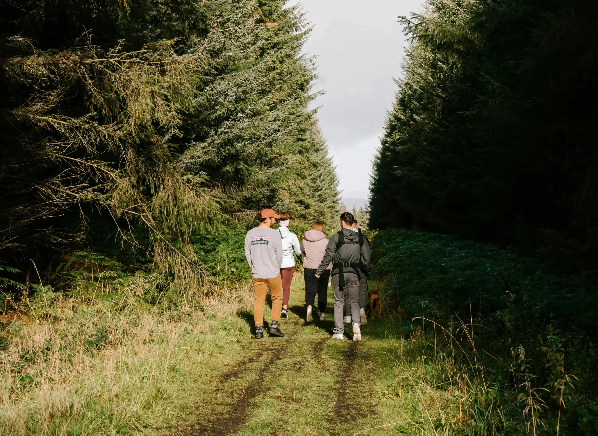

“En øre i brønden – et ønske for naturen”
Hver gang du bruger dit Dankort, donerer vi 1 øre til Den Danske Naturfond. Det bliver til mere end 10 millioner kroner hvert år, der går ubeskåret til opkøb og udvikling af mere vild og varig natur i Danmark. Vi kalder det Dankort Ønskebrønden.
Målet er ikke at forbruge mere, men at skabe mere plads til den danske natur.
Hvad er Dankort ønskebrønden?
Hver gang du bruger dit Dankort, kan du nu opspare rabatter på todbilletter når du tager s-toget. For hver gang du bruger dankort bliver 0.5% af beløbet til en opsparing til at bruge på togbilletter. Endnu en måde du kan være med til at vælge det bæredygtige valg og passe bedre på vores natur!
Donationen går ud på
Hos os doneres der 1 øre når du bruger dit betalingskort, 1 øre fra banken og 1 øre fra
samarbejdspartnere, som er
udvalgte butikker.
Det er ikke dine penge, der doneres. Det er Dankort, der donerer 1 øre pr. transaktion til Den Danske
Naturfond. Det
samme gør de partnervirksomheder, der er med i samarbejdet.
Alle Dankorts pengebidrag til Naturfonden kommer fra Dankort selv, der er ejet af Nets/Nexi. Ønsker du
som forbruger
selv at bidrage med donationer, kan dette ske via Naturfondens hjemmeside: www.naturfonden.dk
Formålet med samarbejdspartnerne
Det betyder, at Dankort ønsker at styrke den danske natur og bidrage til den kollektive
naturgenopretning i
hele
Danmark. Til det formål er Den Danske Naturfond en velvalgt samarbejdspartner, da vores bidrag går
ubeskåret
til at
sikre mere blivende natur i hele Danmark – øre for øre.
Der findes mange vigtige formål, som vi kunne have valgt at støtte med Dankort Øremærket. Vi har valgt,
at
det skal være
den danske natur, fordi naturen er noget alle i Danmark er fælles om – både at nyde og at passe på. Men
desværre ser vi,
at den danske natur har det skidt og at dyr og planter forsvinder. I samarbejde med Den Danske Naturfond
kan
vi gøre
noget konkret for naturen i Danmark, så både nuværende og kommende generationer kan nyde godt af den.
Du kan altid vælge den grønne transport
Hver gang du bruger dit Dankort, kan du nu opspare rabatter på todbilletter når du tager s-toget. For hver gang du bruger dankort bliver 0.5% af beløbet til en opsparing til at bruge på togbilletter. Endnu en måde du kan være med til at vælge det bæredygtige valg og passe bedre på vores natur!